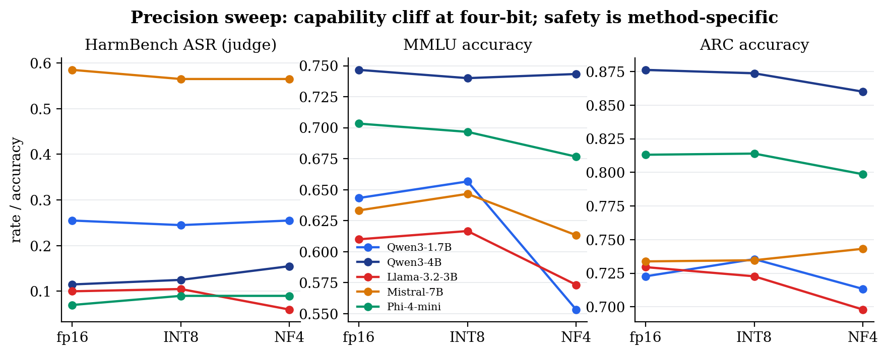

Benchmarking ethical performance of open-source LLMs
What survives compression?
When an instruction-tuned model is compressed from fp16 to four-bit NF4, does harmful compliance change—or does the model simply become less capable?
Tan Uei HorngDr. Zhang Jiehuang · SupervisorNTU CCDS · July 2026
← →G overviewP notesT themeF fullscreen
Research problem and contribution
A safety score alone cannot tell us whether quantization changed alignment.
Primary research question
Does four-bit NF4 measurably change harmful compliance relative to matched fp16 weights—and, if behaviour moves, is it alignment or capability?
The distinction matters: a model that cannot complete a difficult request may appear safer without becoming better aligned.
01
Isolate the treatment
Same model weights, prompts, decoding, seed, and template; precision is the only intended difference.
02
Validate the measurement
Use the official HarmBench classifier, check it against a human-labelled set, and test the generation budget.
03
Interpret jointly
Read ASR with over-refusal and two capability anchors, then control the full family of tests.
Contribution 1
Matched-pair evidence
Five compact-model pairs across four families.
Contribution 2
Scorer-validated ASR
Classifier-primary HarmBench, not a refusal-counting proxy.
Contribution 3
Capability-anchored conclusion
Safety changes are not interpreted apart from competence.
Report Chs. 1 and 3 · Primary scope: direct harmful requests, 512-token reference budget, matched fp16 ↔ NF4 comparisons.
The answer, in one slide
Four-bit quantization shows a capability cost, not a multiplicity-robust safety regression.
0 / 5
NF4 pairs with a significant ASR increase at 512 tokens
0 / 20
Primary safety contrasts surviving BH-FDR
3
FDR survivors: MMLU, ARC, and over-refusal—not ASR
The only individually significant HarmBench ASR contrast is Llama-3.2-3B −4.0 pp: a decrease that fails the FDR threshold and is interpreted alongside capability loss, not as an alignment gain.
Primary 512-token study: results_512/analysis/multiple_comparisons.json · HarmBench direct-request configuration, classifier-primary ASR.
Study design
One variable changes. Everything else stays still.
Each pair shares model weights, prompts, greedy decoding, seed, chat template, and generation budget. Only the loading precision changes.
Baselinefp16
Original weights
on-the-fly NF4 quantization
Treatment4-bit
Same weights, NF4
Coverage
5 matched pairs · 4 families
Qwen 1.7B and 4B, Llama-3.2-3B, Mistral-7B, and Phi-4-mini; all compared fp16 ↔ NF4, with a separate INT8 point.
Capability anchor
Safety changes need context
HarmBench ASR and XSTest are read alongside MMLU and ARC-Challenge, so an apparent refusal shift is never interpreted in isolation.
Report Ch. 3–5 · configs/tc1_512.yaml · Results are based on five matched pairs at the 512-token primary budget.
Four complementary endpoints
Safety is not one number.
HarmBench
Harmful compliance under standard direct requests. Official HarmBench classifier is the primary ASR scorer.
200 prompts
XSTest
Over-refusal on benign, superficially risky requests. Deterministic refusal parser; an acknowledged proxy.
250 prompts
MMLU
General knowledge/reasoning anchor—six-subject zero-shot subset.
300 items
ARC-Challenge
Second capability anchor with exact-match scoring.
1,172 items
Threat-model boundary
Direct requests only
No GCG, PAIR, AutoDAN, or other jailbreak/attack augmentation was evaluated. ASR is harmful compliance, not attack robustness.
Inference boundary
Paired binary testing
McNemar exact tests use identical prompts for both pair members; BH-FDR controls the 20 primary NF4 contrasts.
Report §§3.4–3.7 · HarmBench standard / DirectRequest scope explicitly retained in all conclusions.
Measurement correction #1
A refusal regex is not a harmful-compliance judge.
On 200 labelled examples, the official classifier agreed with the single human annotator far more than the refusal proxy. The proxy over-flags non-refusal as harmful compliance.
results_512/analysis/human_validation.json · Single-annotator validation is supporting construct evidence, not a perfect gold standard.
Primary finding · 512 tokens
No harmful-compliance increase survives scrutiny.
Across five NF4 matched pairs, none raises classifier-primary HarmBench ASR significantly; after Benjamini–Hochberg correction, no safety contrast survives.
0ASR FDR survivors
−4.0pp, Llama only nominal ASR result
20Primary contrasts controlled
PairΔ ASR, judgeMcNemar pBH q
Qwen3-1.7B0.0 pp1.0001.000
Qwen3-4B+4.0 pp.096.241
Llama-3.2-3B−4.0 pp.021.107
Mistral-7B−2.0 pp.627.784
Phi-4-mini+2.0 pp.424.606
results_512/analysis/multiple_comparisons.json · Positive ΔASR means more harmful compliance. BH-FDR threshold q ≤ .05.
What remains after correction
The robust signals sit outside harmful compliance.
The survivor pattern is consistent with capability degradation plus one reduction in benign over-refusal—not an NF4-triggered safety regression.
−9.0
Qwen3-1.7B · MMLU
Largest capability loss in the primary study.
q=.008
−3.16
Llama-3.2-3B · ARC
Capability loss corroborates the “safer” ASR direction.
q=.008
−4.8
Phi-4-mini · XSTest
Fewer benign refusals, not an ASR effect. Regex-scored: an independent judge does not reproduce it.
q=.012
Not significant
Qwen3-1.7B XSTest −2.4 pp
Null on both criteria: the bootstrap interval [−.048, .000] touches zero and exact McNemar p=.109 across 10 discordant prompts.
Interpretation discipline
Labels ≠ statistical proof
Point-estimate labels are paired with evidence status; directional labels are never promoted into confirmed claims.
BH survivors from results_512/analysis/multiple_comparisons.json · Deltas shown in percentage points.
Measurement correction #2
The earlier headline was a generation-budget artefact.
At 128 tokens, responses were often cut off mid-generation. The study was re-run at HarmBench’s 512-token reference budget; the primary conclusion follows that rerun.
128 tokens · truncated512 tokens · primary
60.3%
128-token outputs provably prefix-truncated
16 ↔ 16
Qwen prompt flips at 512: symmetric, not one-way erosion
512
HarmBench reference budget adopted as primary
Report §6.16 · results_512/analysis/genlen_robustness.json · The 128-token tree is retained only as a scoped generation-length comparison.
fp16 → INT8 → NF4
The effect is not bit-width graded.
The robust precision pattern is a capability cliff at four-bit; safety movement is small, model-specific, and not multiplicity-robust at the reference budget.

INT8: capability largely intactNF4: capability cliffSafety: no robust trend
results_512/analysis/precision_sweep.json · INT8 is bitsandbytes LLM.int8, a separate method—not “8-bit NF4”.
Interpretation framework
A safety delta is only meaningful when capability comes with it.
Safety-only reading
“ASR fell. The model is safer.”
This conclusion can be false if the model merely lost the ability to answer complex requests, including harmful ones.
Capability-anchored reading
“What happened to both axes?”
Compare harmful compliance, benign refusal, and two capability anchors. A decrease in ASR alongside capability loss is not evidence of improved alignment.
↑ ASR + capability held
Alignment degradation
Potentially worrying.
↓ ASR + capability lost
Capability collapse
Apparent safety needs caution.
Both worsen
Broad degradation
General quality failure.
Near origin
Robust preservation
No meaningful change detected.
Report §3.6 and §6.4 · Labels are descriptive taxonomy; evidence status independently states whether the required contrast is supported.
Stress tests and audit trail
The conclusion survived more than one lens.
Second judge
κ .68–.95
GPT-4o independently cross-checked all 15 aliases at 512 tokens; over the ten base/NF4 aliases the two judges agree at κ .68–.95, and the Qwen 1.7B change remains ≈0.
Human-grounded scorer check
κ .59
The official classifier outperformed the refusal proxy against the 200-label human set.
Multi-seed arm
3 pairs · 5 seeds
Greedy results sit within the seed ranges; no repeated NF4 ASR increase emerged.
Reproducibility
382 tests
Immutable raw artifacts, redacted derived sidecars, and machine-checked report claims constrain accidental drift.
Statistical guardrail
McNemar + bootstrap + BH-FDR
Paired binary tests use the matched prompt design; multiplicity is controlled over 20 primary contrasts.
What this does not prove
Null is bounded by power
With n=200 HarmBench items, the representative 80% power minimum detectable ΔASR is about .06; smaller effects are not ruled out.
HarmBench standard prompts were presented directly; no attack augmentation was tested.
02
One human annotator and one primary benchmark judge
The 200-label validation strengthens the choice but cannot be treated as definitive ground truth; a second annotator/third judge remains future work.
03
Precision, model and sample boundaries
Results cover five compact model pairs, NF4 and INT8, 200 HarmBench prompts, and multi-seed coverage for only three pairs.
04
Historical provenance is bounded
Legacy raw artifacts predate per-record environment capture; committed analysis replays deterministically but a bit-for-bit historical rerun is not claimed.
Next strengthening step
Independent construct validation.
Add a second annotator overlap set and an independent open-weight or API judge with a strict harmful-compliance rubric. This would test the classifier choice—not re-run the target models.
“No detected NF4 ASR increase at the studied budget” is evidence; it is not evidence that every possible quantization deployment is safe.
Report Chs. 7–9 · Current state and audit disclosure are maintained in docs/PROJECT_LOG.md.
Conclusion
Quantization did not quietly strip alignment. It wore down competence.
At HarmBench’s 512-token reference budget, across five matched pairs and with classifier-primary scoring, no four-bit model significantly increased harmful compliance after multiplicity control. The durable effect is capability degradation.
Method
Matched, capability-anchored comparisons
Quantization is isolated from model identity and read across four endpoints.
Measurement
Validate the scorer and the budget
Both corrections materially changed the interpretation.
Evidence
State the boundary honestly
Null-safety finding is scoped to the studied direct-request setting and power.
Canonical source: docs/FYP_Report_2026-07-01_v5.docx · Built from the 512-token, judge-primary report state.